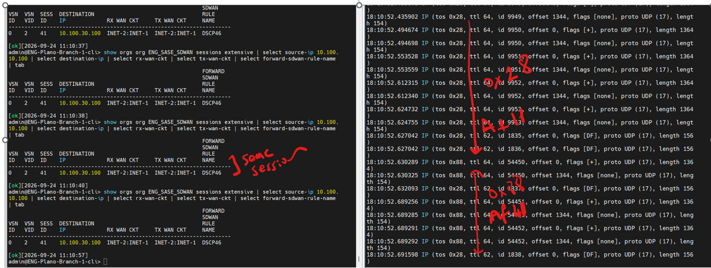
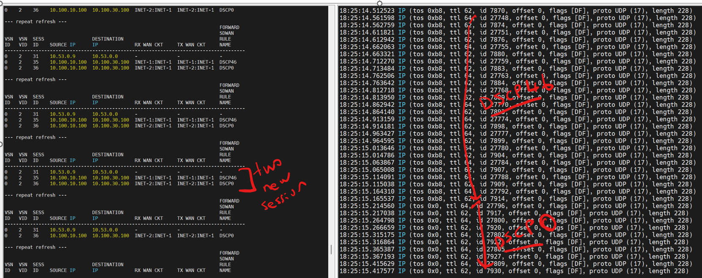

Lab notes and raw measurements, 24 Sep 2026, VOS 23.1.2. Raw per-step results, screenshots and the traffic generators are in the companion repository.


Lab test, 24 Sep 2026. Environment: CML lab ENG_SASE_SDWAN_SDLAN (192.168.20.65), VOS 23.1.2-J GA (build 20260614). Hub ENG-HUB-NU (mgmt 192.168.11.107) <-> branch ENG-Plano-Branch-1 (mgmt 192.168.110.17), two INET circuits each. Hosts: desktop-1 10.100.10.100 (hub LAN vni-0/2.0 10.100.10.1/24, mgmt 192.168.110.18) -> desktop-0 10.100.30.100 (branch LAN, mgmt 192.168.20.171). Both Alpine Linux with python3.
The question (long-lived encrypted session whose DSCP varies per packet)
- Can VOS re-evaluate SD-WAN policy when DSCP changes mid-session? -> No re-evaluation trigger exists.
- Alternative? ->
set system session additional-flow-key-attribute dscp(22.1.4+): DSCP becomes part of the session key, so every DSCP value is its own session and gets its own SD-WAN policy evaluation.
Test config (both devices, applied from the CLI via vsh allow-cli; Director shows them out of sync afterwards)
set orgs org-services ENG_SASE_SDWAN sd-wan forwarding-profiles FP-INET1 circuit-priorities priority 1 circuit-names local [ INET-1 ]
set orgs org-services ENG_SASE_SDWAN sd-wan forwarding-profiles FP-INET1 circuit-priorities priority 2 circuit-names local [ INET-2 ]
set orgs org-services ENG_SASE_SDWAN sd-wan forwarding-profiles FP-INET2 circuit-priorities priority 1 circuit-names local [ INET-2 ]
set orgs org-services ENG_SASE_SDWAN sd-wan forwarding-profiles FP-INET2 circuit-priorities priority 2 circuit-names local [ INET-1 ]
set orgs org-services ENG_SASE_SDWAN sd-wan policies Default-Policy rules DSCP46 match dscp [ 46 ] set forwarding-profile FP-INET1
set orgs org-services ENG_SASE_SDWAN sd-wan policies Default-Policy rules DSCP0 match dscp [ 0 ] set forwarding-profile FP-INET2
set orgs org-services ENG_SASE_SDWAN sd-wan policies Default-Policy rules DSCP10 match dscp [ 10 ] set forwarding-profile FP-INET1
set orgs org-services ENG_SASE_SDWAN sd-wan policies Default-Policy rules DSCP34 match dscp [ 34 ] set forwarding-profile FP-INET2
set system session additional-flow-key-attribute dscp # the knob (removed with delete + commit)
Hub LAN: delete interfaces vni-0/2 unit 0 family inet dhcp + set ... address 10.100.10.1/24 (was DHCP client, no IP).
Traffic
- dscp_send.py: one UDP socket bound to src port, setsockopt(IP_TOS) before each packet (rotating or file-controlled /tmp/dscp).
- udp_echo.py on receiver: replies to every packet with the same DSCP -> reverse counters and TX circuit populate.
- iperf 2.2.0 alternative:
iperf -c 10.100.30.100 -u -p 5002 -B 10.100.10.100:40001 -b 200k -t 60 -S 0xb8(kill + restart with new -S, same source port, within 30 s UDP idle timeout). Default 1470 B datagrams fragment; use -l 1200.
Results
Knob OFF (rules active): one session per 5-tuple. Hub sess 0/2/18: forward-sdwan-rule-name DSCP46, tx-wan-ckt INET-1:INET-1, 4105 fwd pkts, while wire DSCP was already 10. Branch sess 41: rule DSCP46, INET-2:INET-1 constant while TOS 0x28->0x88. DSCP column in sessions brief shows -.
Knob ON: DSCP column populated; each DSCP = own session and own rule/path.
Hub sess 32 DSCP46 rule DSCP46 INET-1:INET-1 ; sess 33 DSCP0 rule DSCP0 INET-2:INET-1
Hub sess 36 DSCP0 rule DSCP0 rx=tx INET-2:INET-1 fwd 2604 rev 2604 (echo test)
Branch sess 78 DSCP0 rule DSCP0 rx=tx INET-1:INET-2 fwd 2612 rev 2612
TX WAN CKT is empty on the receiving side until the first reverse packet (iperf UDP server sends nothing back until the end).
Useful CLI
show configuration system session | display set
show orgs org ENG_SASE_SDWAN sessions brief | match 40002
show orgs org ENG_SASE_SDWAN sessions extensive | select source-ip 10.100.10.100 | select destination-ip | select rx-wan-ckt | select tx-wan-ckt | select forward-sdwan-rule-name | tab
request clear sessions org org-name ENG_SASE_SDWAN
tcpdump (Alpine/BusyBox): sudo tcpdump -ni eth1 -l -v udp src port 40002 2>/dev/null | grep -o 'tos 0x[0-9a-f]*' | uniq
TOS->DSCP: 0xb8=46, 0x0=0, 0x28=10, 0x88=34
Caveats
- Device-wide knob (all tenants, all flows). Session count grows per DSCP value per flow.
- [Inference] TCP flows that remark mid-stream: the new-DSCP "session" starts without SYN -> dropped if check-tcp-syn true (lab devices have it false; not tested).
- Enable on both CPEs (each direction classified at its own ingress). Existing sessions keep the old key until idle timeout; use
request clear sessions org org-name <org>. - Public docs: only the API reference + 22.1 release note. No dedicated article.
Extra test: do the "re-evaluate" options re-match the rule on DSCP change? (18:33-18:35 UTC) -> NO
Knob OFF. On both devices, FP-INET1 and FP-INET2: evaluate-continuously enable, nexthop-reevaluate enabled, recompute-timer 5.
Flow started at DSCP 0 -> hub sess 38 rule DSCP0 INET-2:INET-1. Same socket switched to DSCP 46 at 18:34:21 (wire tos 0xb8).
50 s later: hub sess 38 still rule DSCP0, INET-2:INET-1, fwd=rev=1993 and counting; branch sess 83 same. Rule and path frozen.
session-reevaluate (system > session, default true) fires on config/route change only. recompute-timer = periodic SLA-based FP recompute (default 300 s).
Extra test 2: rw-rules copy-from-inner (outer tunnel DSCP) — 20:23-20:30 UTC
Director GUI location: Appliance > Networking > Class of Service > RW Rules > Options > "Copy From Inner".
CLI: set orgs org-services ENG_SASE_SDWAN class-of-service rw-rules copy-from-inner true (default false; also copy-from-outer).
Lab had it UNSET. Measured on hub vni-0/0 with VOS CLI tcpdump + BPF on the outer TOS byte:
tcpdump vni-0/0 filter "ip[1]=0xb8 and greater 250 and port 4790" timeout 2 (data pkts are 334 B; SLA probes 202 B)
- copy-from-inner unset, inner DSCP 46 : data packets outer TOS = 0 (only 202 B SLA probes carried 0xb8).
- copy-from-inner true (both devices), inner 46: outer 0xb8 both directions (39/40 pkts per 2 s).
- inner switched to 10 in the SAME session (knob off, sess 40 still rule DSCP46 / INET-1:INET-1): outer 0x28 both directions, 0xb8 gone.
=> Outer DSCP rewrite is per packet and independent of the session's policy decision; path/rule selection is per session.
Full 2x2 matrix (knob off/on x copy-from-inner off/on)
Each combination: same UDP socket, inner DSCP 46 -> 0 -> 10 -> 34 (60 s each), measured 10 s after every change. Per step: LAN DSCP at sender and receiver, hub and branch session tables (rule, circuits, counters) and the outer tunnel TOS on both WAN interfaces of both devices, sent and received. - results/matrix-sessions-and-lan.md - session tables and LAN DSCP - results/matrix-wan-outer-tos.md - outer TOS per device/interface/direction
Summary: path/rule selection is per session and only the knob changes it; the outer DSCP is rewritten per packet and only copy-from-inner changes it (off = outer DSCP 0 in both directions regardless of the inner value). The two settings are independent.
Measurement notes for the VOS CLI tcpdump: the filter rejects & and >; a capture issued immediately after another one silently returns without capturing, so check for the Stopping capture trailer and retry; use timeout 2 or longer.